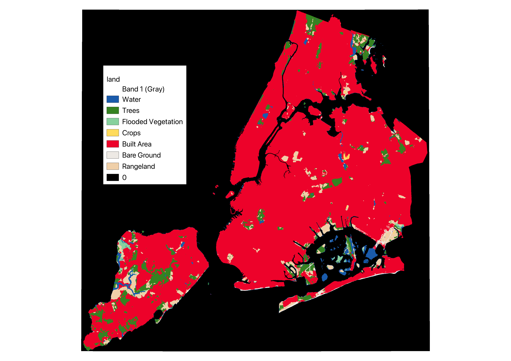

Project Overview
The TransEcon project explores the impact of transportation infrastructure on NYC's economic landscape, focusing on property values, economic growth, and business activity.

Objectives
- Analyze the influence of transportation access on economic growth and property values in NYC.
- Assess the distribution of economic benefits across different demographics.
Methodology
Detailed GIS analysis using data from NYC Open Data, Metropolitan Transportation Authority, and other sources.
Results
Significant correlations found between transportation access and increased property values. Analysis of zoning types near major airports also provided key insights.
Further Analysis
Examination of tree canopy coverage and its socio-economic impacts, focusing on the relationship between green spaces and community health.